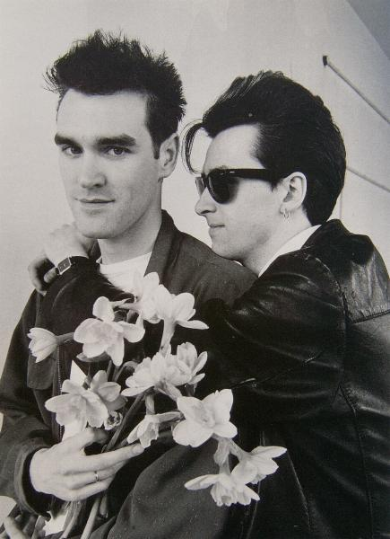

| Paul Slattery/Retna | ||
| Back 04/28 |
 | Next 06/28 |
Morrissey & Marr, the words'n'music department of The Smiths, together in Manchester, April '83. Before separating in 1987, they constructed epics of bedsit miserablism like This Charming Man, Hand In Glove and Heaven Knows I'm Miserable Now. |